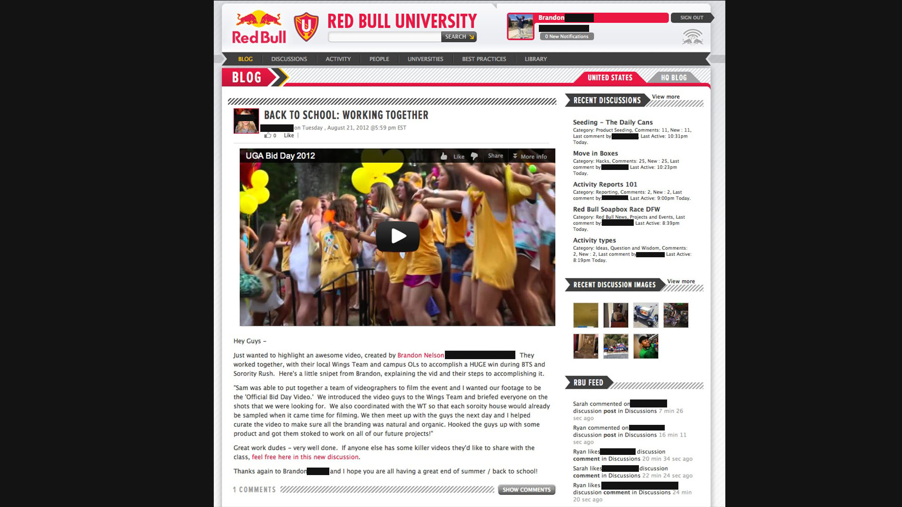
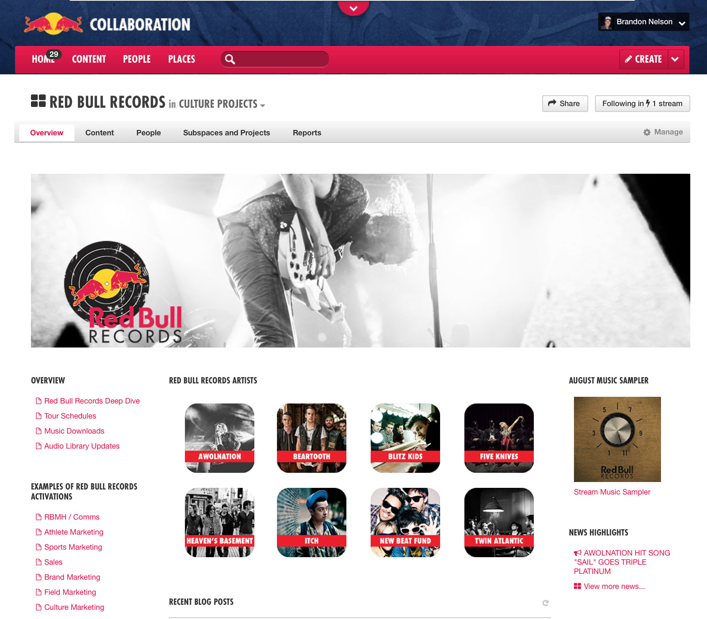
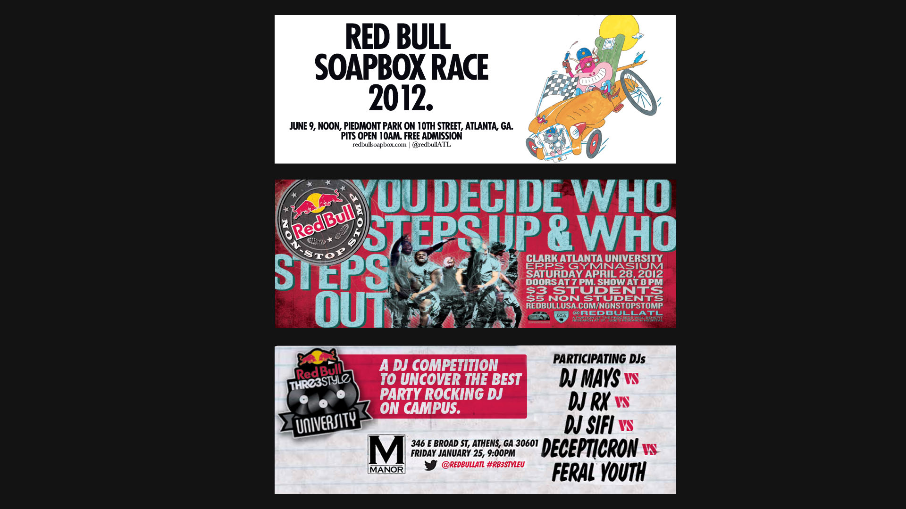
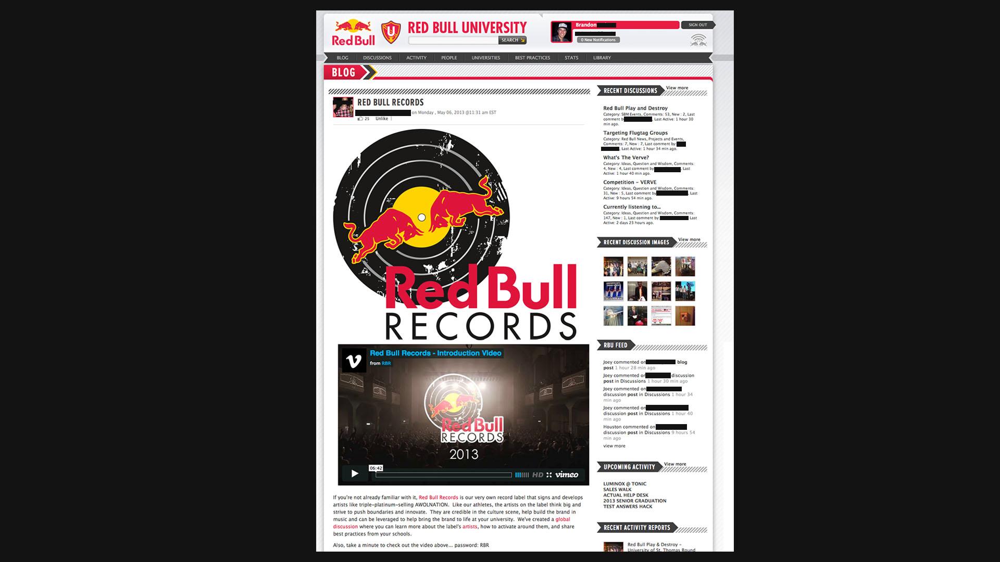

2011 / collaboration / culture / media
Early work across global collaboration products, music media guidelines, culture events, large-format graphics, and systems for helping creative teams share knowledge across regions.

The most valuable part of this period was learning how creative operations scale: how teams share references, how regional work keeps a shared standard, and how music, events, and digital surfaces need a common language.
That mix of research, design, and systems thinking became the base for later music platforms, label tools, and software products.



